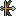

Guild Practice Bow
Normal Bound Two-handed
A plain practice bow lent for the Thornstrider trial; it shoots at the Thornstrider's pace. It goes back to the trainer when the trial ends. Both hands.
id: guild_practice_bow
Stats
- Type
- Both arms · Bow
- Required level
- 1
- Classes
- Every class
- Weapon level
- 1
- Attack delay
- 700 ms
- Reach
- 6 m
- Bonuses
- ATK +20
- Weight
- 40
- Sells for
- Shops will not buy it
Card slots
No card slots.
Other ways to get it
- Lent for the class trial (bound, it goes back when the trial ends): Thornstrider